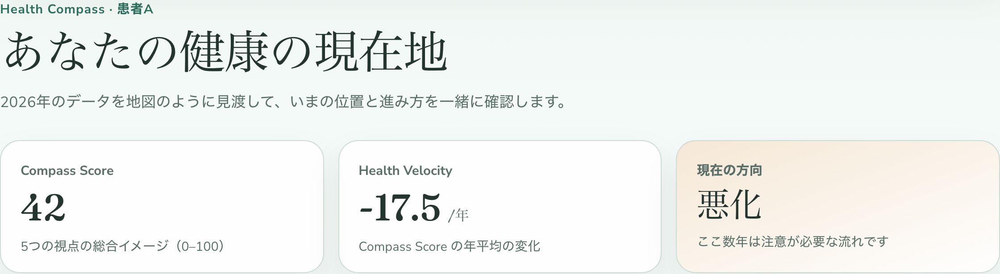
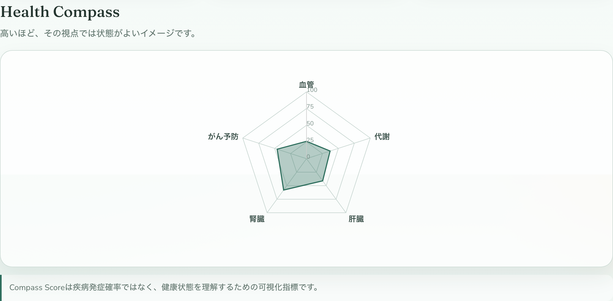
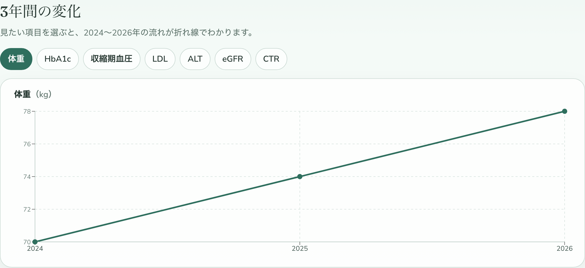
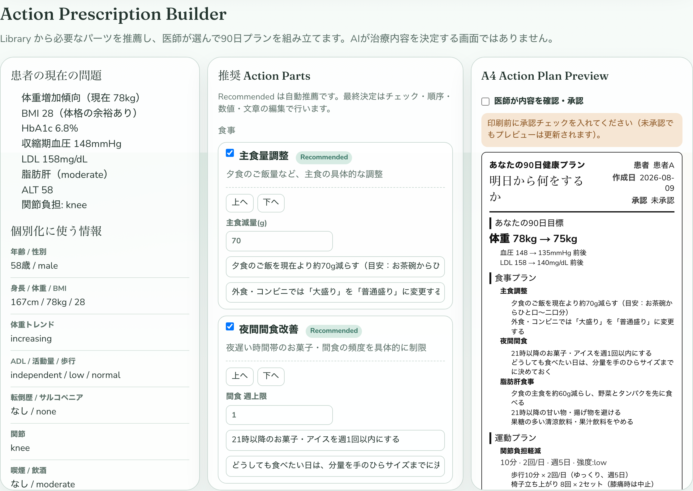
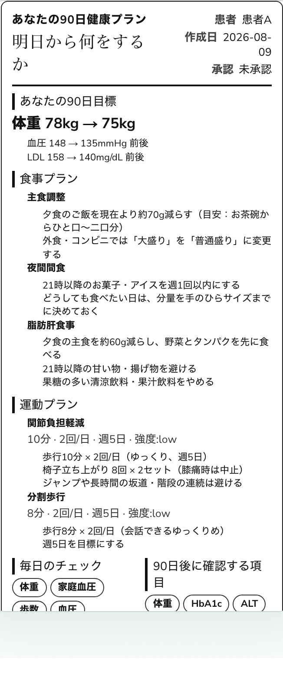
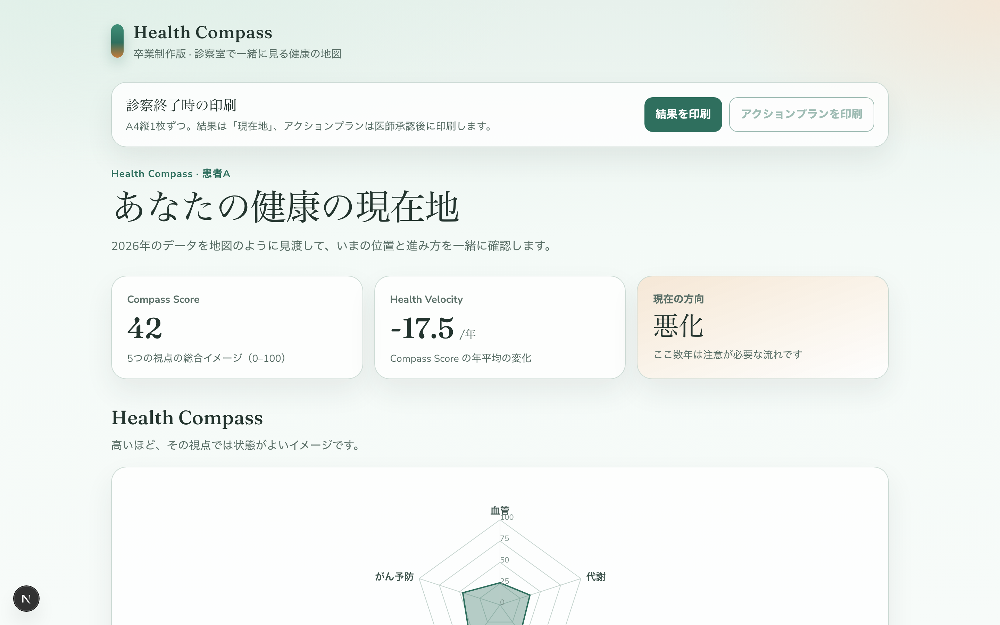

Health Compass
病気を診断するアプリではありません。
医師と患者が、現在地・方向・未来を一緒に理解するための可視化ツールです。
健康理解 ＝ 現在地 × 方向 × 行動
発症確率を出すのではなく、「いまどこにいて、どこへ向かい、何を変えるか」を共有する
レーダー
持ち帰りA4
結果画面
いまどうなっているか
Action Builder
医師がパーツを選ぶ
A4プラン
明日から何をするか
なぜこのアプリを作ったのか
健診結果を渡されても、「数値の束」だけでは患者は動きにくい。診察室で医師と患者が同じ地図を見ながら話せる道具がほしかった、というのが出発点です。
このツールでやらないこと
- × 病気の確定診断
- × 疾病発症確率の算出
- × AIが治療方針を自動決定
仕組みをこう分けた3つの理由
可視化と医療リスクを混同しない
Compass Score と Risk Engine を分離。未検証の発症確率は出さない。
Action は AI 一括生成にしない
Parts Library から推薦し、最終決定は医師。数値も文章も編集できる。
持ち帰れる具体行動にする
「適度に運動を」ではなく、分・回・頻度まで書いた90日プラン。
必ず覚えて帰りたい公式
Compass Score ≠ 発症リスク
Score は健康状態を理解するための可視化指標。
医学的リスク計算は将来の検証済みモデル用に口だけ開けておく（いまは動かさない）。
画面1｜健康の現在地
最初の30秒で「いまどこにいるか」がわかるように、Score・Velocity・方向の3カードを置いています。

Compass Score
5視点の総合イメージ
Health Velocity
年平均の変化の速さ
現在の方向
改善 / 安定 / 悪化
画面2｜5領域レーダー
血管・代謝・肝臓・腎臓・がん予防。高いほど良好、という共通の見方で俯瞰します。

画面3｜3年間の変化
体重・HbA1c・血圧などを切り替えて折れ線表示。「別々の異常」ではなく、流れとして話せるようにしています。

核心｜Action Prescription Builder
AIが文章を一括生成して「これが治療です」とは言いません。
Library からパーツを推薦 → 医師が選ぶ・直す → A4になる、という組み立て方です。
3ペインの役割分担
左：問題
個別化データと課題
中央：Parts
Recommended を医師が選択
右：A4
リアルタイム Preview

医学ロジックの置き場
nutritionParts / exerciseParts / modifiers / safetyRules
医師ができること
追加・削除・順番・数値・文章の修正と承認
患者が持ち帰る｜90日健康プラン
「バランスの良い食事を」「適度に運動を」は禁止。
ご飯何g、歩行何分×何回、週何日、まで具体化します。

A4の構成
- 90日目標（例：78kg → 75kg）
- 食事プラン（具体行動）
- 運動プラン（種類・回数・時間・頻度）
- 毎日のチェック / 90日後の確認項目
Dashboard 全体像
診察の説明から、持ち帰りのプラン作成までを一つの画面でつなぎます。

技術とデータの置き方
フロント
Next.js / TypeScript / Tailwind / Recharts
データ
外部DBなし。架空患者Aをローカル管理
AI API
未使用。将来は言い換え補助だけを想定
対象画面
診察室の iPad / PC を優先
まとめ ── 覚えておきたいこと
診断ではなく、地図を共有する
現在地・方向・未来の行動を、医師と患者が同じ画面で確認する。Scoreは発症確率ではない。
Action は Parts × 医師の選択
AIが治療を決定するUIにはしない。Library・Modifiers・Safety Rules に医学ロジックを置き、医師が承認してから印刷する。
明日からの具体行動を1枚で渡す
90日プランは、食事・運動・毎日チェック・再評価項目まで落とし込む。抽象アドバイスは出さない。